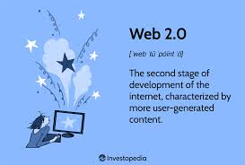

Definition: Web 2.0 refers to the second generation of the World Wide Web, characterized by user-generated content, social media, and interactive web applications.
Web 2.0 emphasizes user participation and collaboration, allowing users to create and share content easily. It enables features like blogs, wikis, social networking sites, and multimedia sharing platforms.
Web 2.0 has revolutionized the way people interact with the internet, making it a more dynamic and engaging experience.